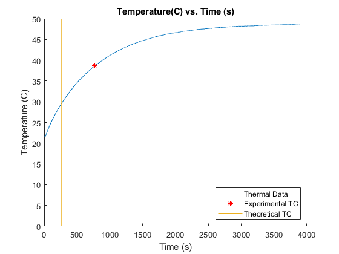

Lab 3 - Thermal System
3/25/21 Michael White Section 3 / Online
close all; clear all; clc; % Import data table for voltage tData = readtable('thermalData.xlsx'); % Define parameters for resistance calculations L_air = 48e-3; %m t_glass = 3e-3; %m K_cond = 0.025; %W/m*K h_conv = 0.79; %W/m^2*K K_glass = 1.41; %W/m*K r_waterplate = 15e-3; %m r_airplate = 16.4e-3; %m r_flask = 0.02; %m H_cone = 0.083; %m A_waterair = pi*r_airplate^2; %m^2 A_waterplate = pi*r_waterplate^2; %m^2 A_water = (pi*r_flask*sqrt((r_flask^2)+(H_cone^2))-... (pi*0.0164*sqrt((0.0164^2)+(0.066^2)))); %m^2 % Calculate resistances R_H = t_glass/(K_glass*A_waterplate); R_G = t_glass/(K_glass*A_water); R_cond = L_air/(K_cond*A_waterair); R_conv = inv(h_conv*A_waterair); R_A = inv(inv(R_conv)+inv(R_cond)); R_L = inv(inv(R_G)+inv(R_A)); R_sys = R_H+R_L; % Capactitance calculation Cp = 4.184e3; %J/kg*K m = 15e-3; %kg C = Cp*m; % Time Constant calculation TheoTau = R_sys*C; % Calculate parameters related to time constant value maxTemp = max(tData.Temp); minTemp = min(tData.Temp); rangeT = maxTemp-minTemp; ExpTau(2) = 0.632*rangeT+min(tData.Temp); % Find the closest point to the calculated time constant value absDiffList = abs(tData.Temp-ExpTau(2)); ExpTau = ... [tData.Time(absDiffList == min(absDiffList)),... tData.Temp(absDiffList == min(absDiffList))]; % Plot figure of shifted data with time constant point. figure; hold on; plot(tData.Time,tData.Temp); scatter(ExpTau(1),ExpTau(2),'*r'); plot([TheoTau,TheoTau],[0,50]); % Cleanup graph and add legend, title, and labels title('Temperature(C) vs. Time (s)'); legend({'Thermal Data','Experimental TC','Theoretical TC'},'Location','southeast'); xlabel('Time (s)'); ylabel('Temperature (C)'); % Display results to command window disp('Theoretical TC =');disp(TheoTau); disp('Experimental TC =');disp(ExpTau(1));
Theoretical TC = 260.5925 Experimental TC = 769